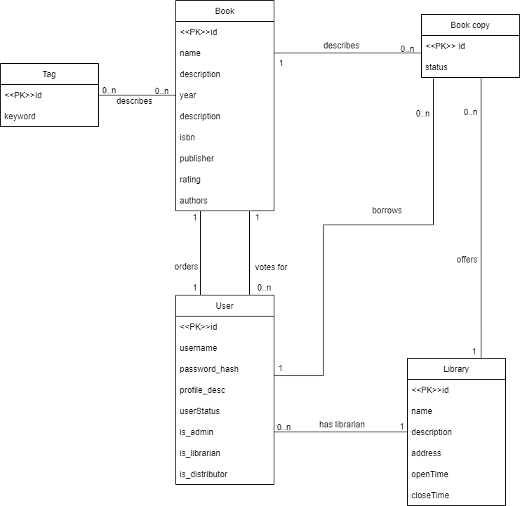

| Login | Heslo | Role |
|---|---|---|
| admin | admin | Administrátor |
| librarian | librarian | Knihovník |
| distributor | distributor | Distribútor |
| user | user | čtenář |
Informačný systém je implementovaný pomocou frameworku Flask, ktorý využíva tzv. Views, čo sú finkcie volané pri dotaze na určité URL
Ak nie je povedané inak, nasledujúce súbory sú v adresári app/routes/
login()register()deleteUser(username)logout()userProfile(username). showUsers() (len pre admin rolu)editUserProfile() a changePassword()addLibrary()(len pre admin rolu)editLibrary()(len pre admin rolu)deleteLibrary()(len pre admin rolu)allLibraries()showLibrary()inventory()allLibrarians() addBook()(len pre knihovníka, admina a distribútora)editBook()(len pre knihovníka, admina a distribútora)deleteBook()(len pre knihovníka, admina a distribútora)allBooks()searchBooks()showBook()(rezervácia len pre registrovaných ak existuje kniha v niektorej knižnici, pridanie do knižnice a objednácka kníh len pre knihovníka a admina, ktorým je pridelená knižnica)Aplikácia v produkčnom prostredí používa PostrgreSQL databázu na serveroch Heroku.
Aplikácia samotná komunikuje s databázou pomocou ORM vytvoreného nástrojom SQLAlchemy.
Migrácie databáz sú vytvorené nástrojom Alembic
FLASK_APP=app : názov aplikácie pre flask.FLASK_ENV=production : typ prostredia pre FlaskSECRET_KEY : secret key.APP_ENVIRONMENT=production : typ prostredia (production/development), ovplivňuje určité nastavenia, napr. logging levelDATABASE_URL : url použitej databázy.REMEMBER_COOKIE_DURATION : Doba po ktorú sa bude udržiavať cookie o užívateľovi.flask db init - Inicializuje podporu pre databázové migrácie. Tento príkaz je treba volať iba pred prvou migráciou.flask db migrate - Vytvorý migračný skrip automaticky z modelu definovaného v kódeflask db upgrade - Upgraduje databázuflask runAplikácie na Heroku využívajú tzv. Ephemeral Filesystem, čo znamená že úpravy súborov za behu aplikácie nemusia (a nebudú) permanentné. Z tohto dôvodu je treba migračný skript pre databázu vytvoriť pred "pushnutím" aplikácie na heroku, a pri spustení aplikácie stačí vykonať upgrade.